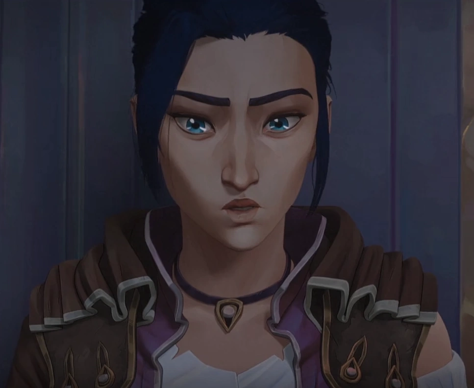
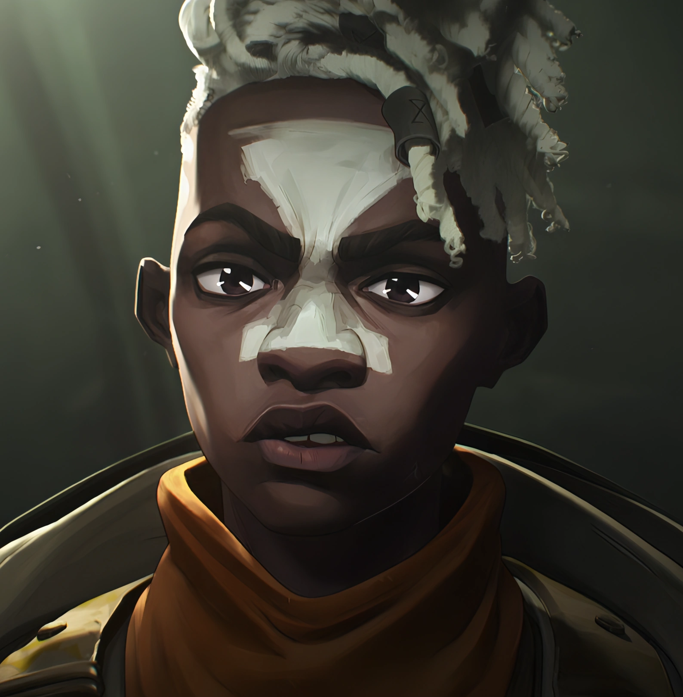
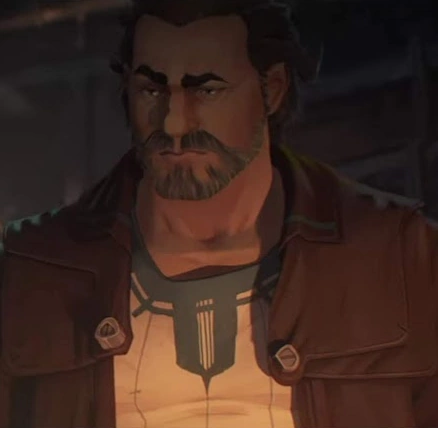
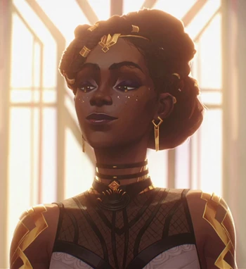

Violet, ou Vi, é uma das Irmãs protagonistas da série. Tendo nascido e crescido nas Vielas, tendo ao redor dos 20-23 anos de idade. é com a volta dela que toda a trama começa a se desenrolar.
Jinx
Jinx é a outra irmã protagonista na série, seu nome anterior era powder, porém, a mesma se desfez deste nome, também tendo crecido nas Vielas, Jinx se encontra ao redor dos 17-19 anos na série, sendo sua insanidade o catalisador para muitas coisas na série.
Caitlyn

Caitlyn é uma investigadora, creceu em uma família nobre em Piltover, Caitlyn se encontra aos seus 20-23 anos, esta mesma auxiliando na trama e sendo um interesse amoroso de Vi.
Ekko

Ekko é um amigo das protagonistas e melhor amigo da powder, este creçeu nas Vielas, tendo cerca de 16-17 anos, ele se tornou o líder de uma causa contra silco, para libertar as Vielas.
Vander

Vander é o pai adotivo de Vi e powder, crecendo nas Vielas e tendo cerca de 40-45 anos, este sendo pacifista, a fim de dar a vida por suas convicções.
Silco
Silco creceu nas Vielas, sendo irmão adotivo de Vander, sua idade é desconhecida, porém é possivel especular 35-40 anos, este foi contra a convicção de seu irmão, criando uma trama.
Jayce
Jayce nasceu em uma fámilia nobre de Piltover, tendo 31-34 anos, estte é responsável por trazer uma tecnologia nova à o mundo de arcane.
Mel

Mel é uma conselheira de Piltover, possuindo 32 anos, esta nasceu na nação de Noxus, uma nação extrangeira à Piltover, Mel auxilia Jayce com sua tecnologia nova, sendo também, seu interesse amoroso.
Viktor
Viktor é o melhor amigo de Jayce e seu parceiro de pesquisa, tendo nascido nas vielas, posteriormente vindo à Piltover, tendo 30 anos, Viktor é assolado por uma doença sem cura, a qual o força a apressar sua pesquisa.